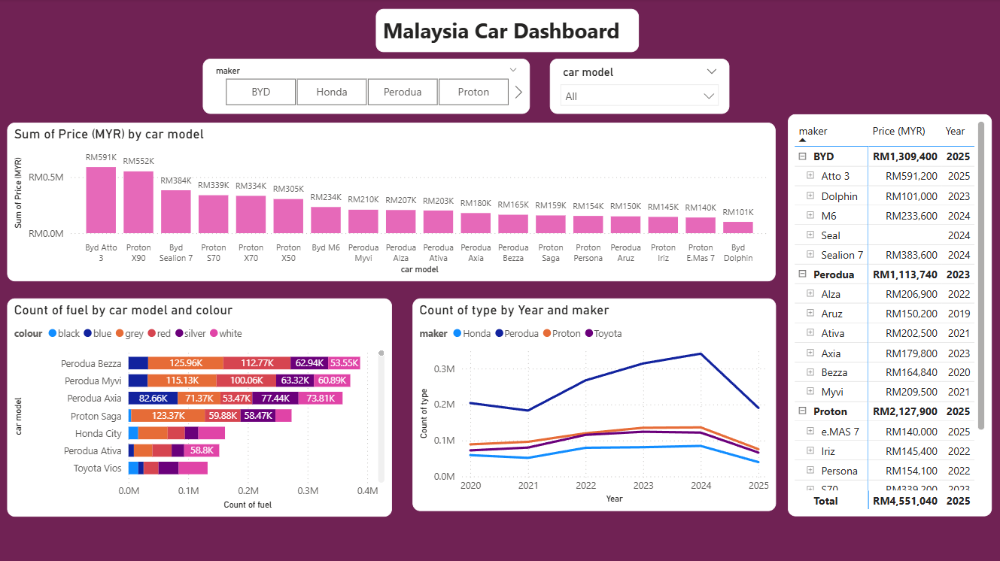

Malaysia Car Market Data Analysis Dashboard

Analysis Overview
This dashboard presents an analytical view of Malaysia’s automotive market using vehicle registration data from data.gov.my combined with estimated market price data obtained through automated web-scraping. The objective of this analysis is to understand pricing structures, brand competitiveness, and consumer preferences across recent years.
Key Analytical Findings
1️⃣ Price Distribution by Car Model
The price comparison highlights a noticeable variance across brands and models. BYD and Proton display higher reported pricing for newer models (2024–2025), suggesting a product shift toward premium and EV categories. Perodua continues to dominate the affordable segment, strengthening its competitive positioning among cost- conscious consumers.
2️⃣ Consumer Colour Preference & Fuel Usage
Data reveals that silver, black, and grey remain the top preferences across multiple models, correlating with fuel-efficient vehicles. This trend may indicate practicality-based purchasing decisions, reinforcing demand for compact yet economical cars — particularly Perodua Bezza, Myvi, and Proton Saga.
3️⃣ Market Trend by Brand Performance (2020–2025)
Analysis of yearly vehicle counts shows:
- Perodua sustains market leadership with consistent volume growth.
- Honda experiences fluctuating performance, indicating competitive pressures.
- Proton shows improvement in recent years, possibly driven by new model launches.
- BYD enters the market aggressively with EV-focused offerings in 2024–2025.
The spike in 2024 followed by a drop in 2025 suggests macroeconomic adjustments or tightening loan conditions.
Insights & Strategic Interpretation
- Growing consumer acceptance of electric vehicles (EVs) as seen through BYD’s market entry.
- Strong loyalty in the affordable category benefits Perodua’s long-term dominance.
- Price-sensitive segments continue to drive Malaysia’s automotive demand patterns.
- Colour preferences are strongly tied to resale value and operational cost considerations.
Tools & Techniques Applied
- Power BI for interactive visualization and DAX-driven data modeling
- Power Query for transformation and cleansing
- Web scraping automation (ChatGPT-assisted) for price dataset enrichment
- Excel for initial data preparation and validation
Conclusion
Through combining open data with market intelligence, this dashboard delivers meaningful insights into the automotive sector in Malaysia. The findings support strategic decision-making in pricing, product positioning, and consumer trend monitoring for stakeholders across the car retail and financing ecosystem.